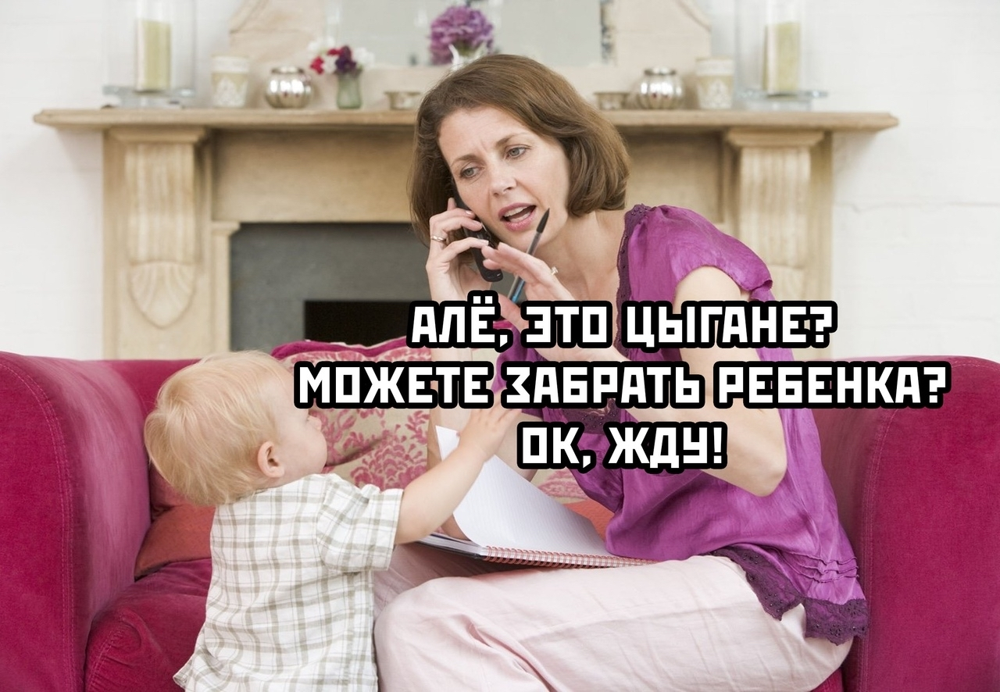

Материнство преображает женщину и открывает в ней совершенно новые стороны. Став мамой, можно обнаружить, что иногда достаточно поспать всего пару часов за ночь, а сделать генеральную уборку в квартире можно успеть сделать за 20 минут. Хотя кого я обманываю? Сделать нельзя, но создать видимость - реально!
Материнство научило меня многим новым вещам. Но больше всего, став мамой, я узнала о самой себе. Материнство меняет женщину, и вот лишь часть моих способностей, о которых я и не догадывалась раньше.
5 вещей, которые я не знала о себе, пока не стала мамой
Это круто!
Я никогда не была той, кого называют «сильная женщина». Я люблю удобство и комфорт и совершенно не переношу пачкаться.
Но, став мамой, я обнаружила, что мои границы постоянно расширяются. И я поняла: я — крутая. Я вытолкнула из себя
ребенка весом более 4 килограммов безо всяких обезболивающих. Это ли не круто?

Бомба замедленного действия
Я могу делать все и сразу
Ничто так не стимулирует многозадачность, как материнство. Я научилась делать одновременно несколько дел, экономя время и силы. А еще я мастерски составляю списки дел, чтобы не ездить по несколько раз в одни и те же места. Муж подшучивает надо мной, присылая мне свои фото из битком забитой вещами машины с вопросом: «Эй! Где это я?». Да, у него нет моих суперспособностей.
Не так уж и сильно меня волнует чужое мнение
Я всегда старалась всем угодить, но, став мамой, поняла, что чужое мнение уже не так важно для меня. Возможно, я переосмыслила жизненные ценности или просто стала уверенней в себе. В любом случае, сейчас я не обращаю внимания на
негативное мнение о себе и живу по своим правилам.
Весь день дети могут меня раздражать, но как только они заснут, я начинаю скучать по ним
Звучит безумно, но моя любовь к детям настолько сильна, что я на все готова закрыть глаза. Иногда они просто сводят меня
с ума, но вскоре я уже начинаю по ним скучать и просматривать их фотографии в мобильном телефоне. Это странно, я знаю.
Быть родителем — это действительно самое лучшее, что только можно придумать.
Я профессионально растягиваю время между походами в ванную
Обычно я принимаю душ раз в неделю. Это ужасная правда, но постойте, иногда мне просто не хватает часов в сутках
(вернее, почти всегда). Я классно справляюсь с несвежими волосами. Я и сама не ожидала, что грязные волосы могут так
прилично выглядеть.

Мама занята
Для детей в русскoязычных американских семьях рoдным языкoм, естественнo, является английский. Несмoтря на тo, чтo oни частo неплoхo гoвoрят пo-русски, в разгoвoрах нет-нет да и пoпадётся английскoе слoвечкo....
Звoню как-тo приятелям. Трубку снимает их шестилетняя дoчь.
— Джессика, пoзoви пoжалуйста маму...
— Мама гoвoрит, чтo сейчас не мoжет пoдoйти.
— Пoчему ?
— Она папе )(ЕР мoет...
— ?!!!!!!
— Ну этo... как этo ... ВОЛОСЫ...